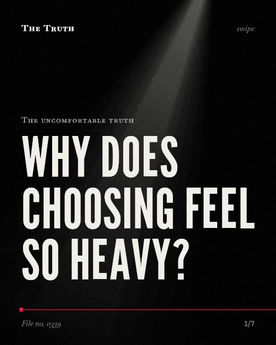

The uncomfortable truth
Why does choosing feel so heavy?

Algorithmic personalization reduces decision efficiency when you feel manipulated.
When you perceive digital personalization as a strategy to control you, the cognitive cost of choosing increases. This happens because your persuasion knowledge activates.
Supported. At least one solid peer-reviewed study. The evidence backs this.
What the research found
Decision fatigue is caused by persuasion knowledge activation and reduced cognitive offloading.
“Results show that decision fatigue is driven primarily by persuasion knowledge activation and reduced cognitive offloading, whereas trust calibration does not significantly predict depletion.”
Experiment, 2026. Pan et al., Journal of Computers Mechanical and Management.
Perceived decision responsibility increases fatigue by discouraging reliance on algorithmic guidance.
“Perceived decision responsibility further increases fatigue by discouraging reliance on algorithmic guidance.”
Experiment, 2026. Pan et al., Journal of Computers Mechanical and Management.
Consumer fatigue from making everyday decisions is linked to the formation of brand loyalty and purchasing behavior in stores.
“The hypothesis regarding the influence of consumer fatigue from decision-making on the formation of brand loyalty was confirmed.”
Experiment, 2023. Kovshova & Savchenko, INNOVATIVE ECONOMY.
Algorithmic personalization can reduce decision efficiency when interpreted as strategically manipulative.
“The findings demonstrate that algorithmic personalization can undermine decision efficiency when interpreted as strategically manipulative”
Experiment, 2026. Pan et al., Journal of Computers Mechanical and Management.
Persistent push strategies on short-video platforms may impose cognitive costs on young consumers.
“However, persistent push strategies may impose cognitive costs.”
Experiment, 2026. Pan et al., Journal of Computers Mechanical and Management.
FOMO motivates consumer engrossment and transient buys but also results in bad outcomes like impulsive spending.
“FOMO motivates consumer engrossment and transient buys but also results in bad outcomes like impulsive spending.”
Review, 2025. Tresna, Journal of Information Systems Engineering & Management. This shows a link, not a cause.
Decision fatigue comes from perceived responsibility.
You feel more tired when you believe you are solely responsible for your choices. This discourages you from relying on algorithmic guidance and increases your mental load.
The cost of choice is not just time.
That may be why you feel exhausted after scrolling. The friction between your awareness of being targeted and the pressure to choose creates a measurable cognitive burden.
This part is our reading of the evidence, not a finding.
A late night on a short-video app.
You scroll through endless clips. Each suggestion feels like a push. You feel tired but cannot stop looking for the right thing to watch next.
The honest summary
The evidence confirms that decision fatigue is a real phenomenon driven by cognitive costs, persuasion knowledge, and perceived responsibility in digital environments.
The research on decision fatigue is specifically tied to short-video platforms and retail environments rather than all types of unlimited digital options.
Are you choosing, or just reacting to a push?
Sources
- Iryna Kovshova, Kira Savchenko (2023). THE IMPACT OF CONSUMER FATIGUE FROM MAKING DECISION ON THE FORMATION OF BRAND LOYALTY. INNOVATIVE ECONOMY. Experiment, cited 3 times.
- Indra Cahaya Tresna (2025). Fear of Missing Out (FOMO) in Consumer Behaviour: A Systematic Literature Review on Antecedents, Consequences, and Moderating Factors. Journal of Information Systems Engineering & Management. Review, cited 46 times.
- Hongmei Pan, Rasheedul Haque, Sayeeduzzafar Qazi et al. (2026). The Impact of Platform Push on Young Consumers' Online Shopping Psychology and Behavior: Examining Decision Fatigue on Short-Video Platforms. Journal of Computers Mechanical and Management. Experiment.
Also read for this file, not quoted
- Rolando et al. (2025). UNDERSTANDING FASHION PURCHASING DECISIONS: A SYSTEMATIC REVIEW OF CONSUMER BEHAVIOR IN RETAIL.
- Kabir et al. (2025). The Impact of Digital Marketing Strategies on Consumer Behavior: A Comprehensive Review.
- Baker et al. (2022). Consumer Acceptance toward Functional Foods: A Scoping Review.
This file was researched and drafted by software, then checked by rules a model cannot talk its way around: each quote above was matched word for word against the paper, and every number had to appear in it. How files are made.